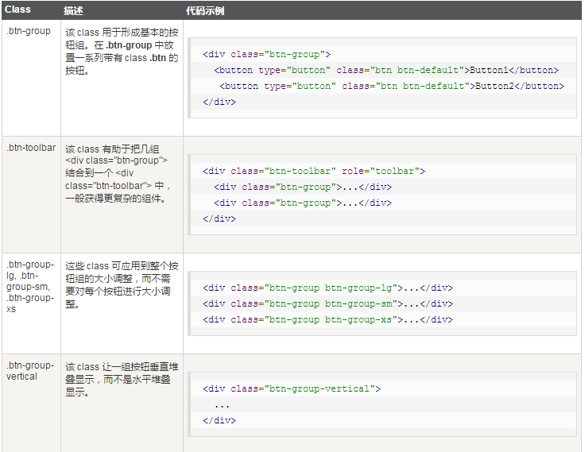

Bootstrap按钮组：按钮组允许多个按钮被堆叠在同一行上。您可以通过 Bootstrap 按钮（Button） 插件 添加可选的 JavaScript 单选框和复选框样式行为。
使用按钮组常用的类：

按钮的大小:.btn-group-lg, .btn-group-sm, .btn-group-xs(这些 class 可应用到整个按钮组的大小调整，而不需要对每个按钮进行大小调整。)
按钮组的嵌套：您可以在一个按钮组内嵌套另一个按钮组，即，在一个 .btn-group 内嵌套另一个 .btn-group
垂直的按钮组：添加btn-group-vertical类